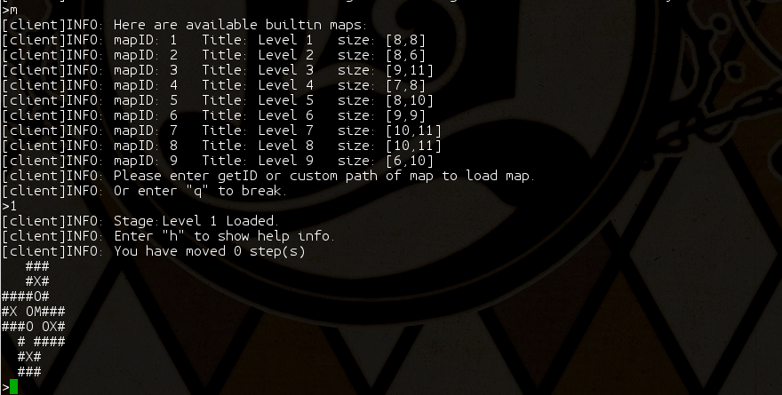
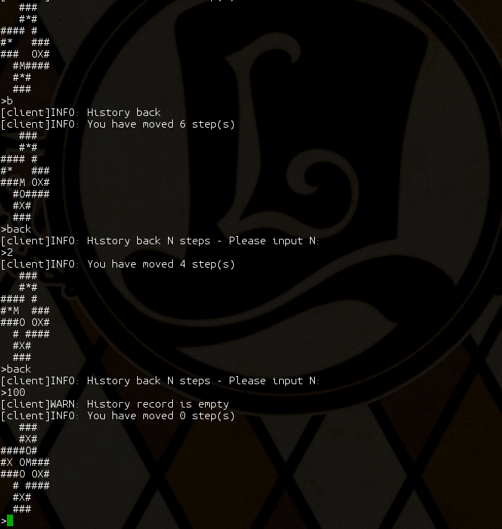
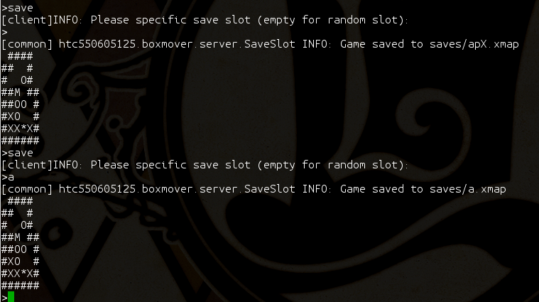
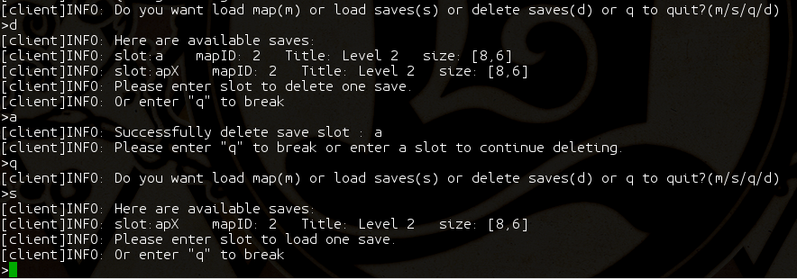

->
-> 
This is the user manual of BoxMover game written by htc550605125.
The BoxMover game is one of the classic games. The player needs to move all the boxes to the destination. For example:
->
Run
./start.sh
under linux, or
start.bat
under windows.
First choose a map to load or delete a save slot :

Type “m” to load local map, then choose map 1:

Let’s start the game!
Type “h” to show help information :

Let’s skip the first stage quickly, just type “wsaadsswdd” :

Congratulations!
You can type “b” or “back” to roll back history moves:

Type “save” at the middle of one stage :

And then, quit the stage, type “s” to load one save :

Let’s continue the game now~
Or you can type “d” to delete one save :

If you are not allowed to move, or sometimes if you are not possible to win, the game will remind you that :

You can modify the config.json to change some settings of the game, for example: